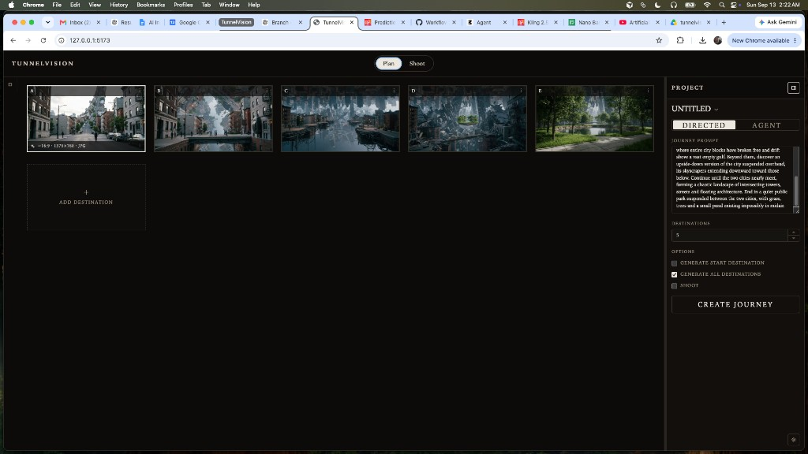
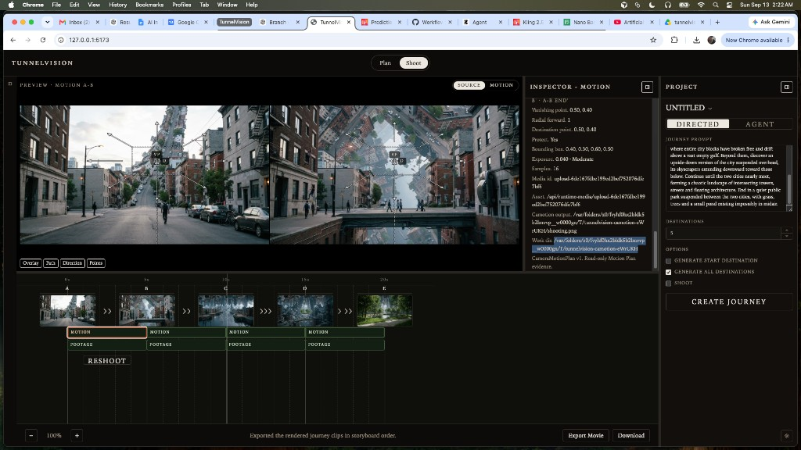
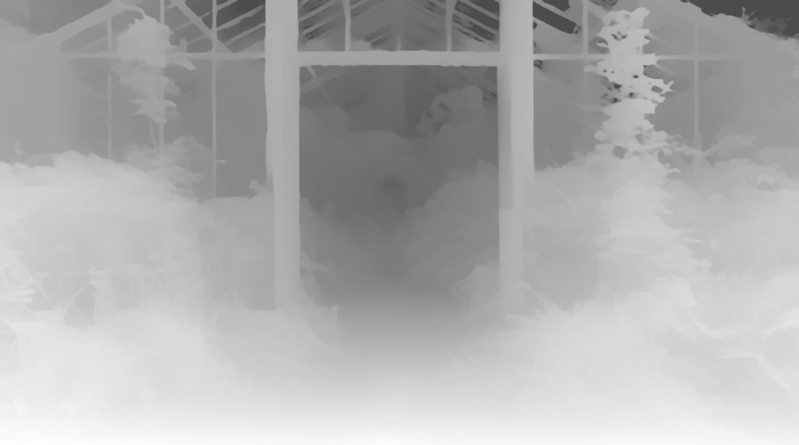
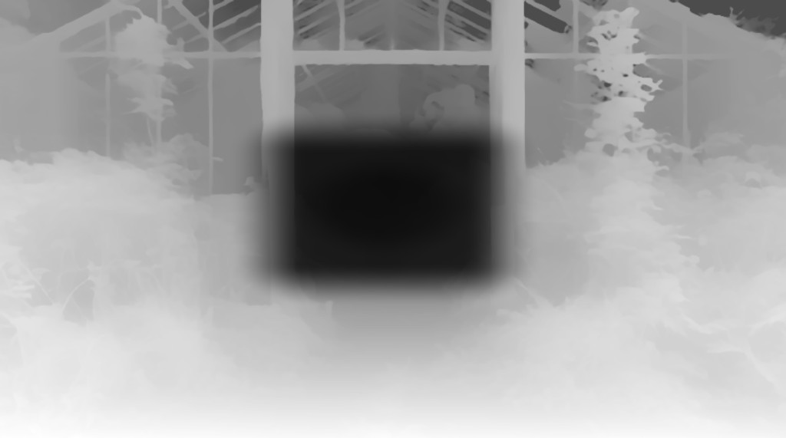

TunnelVision is an AI filmmaking system for directing continuous first-person journeys through imagined worlds. The filmmaker defines the journey. The Director structures the destinations. The Cinematographer figures out how to physically shoot each traversal. Camotion prepares motion-conditioned endpoint frames. The video model films the traversal. The result is a continuous journey assembled from canonical destinations.
This is not a prompt wrapper around a video model. The current movies work because several layers reinforce each other. Exploratory research has been absorbed into the product architecture; these two journeys show the pieces working as a system.
The filmmaker stays on story. Downstream layers own mechanics.
JOURNEY PROMPT is story intent and journey beats. The filmmaker is not asked to write camera mechanics, locomotion prompting, route geometry, model-specific negatives, or video-generation syntax. CREATE JOURNEY is the product-facing Director action. Agency is DIRECTED or AGENT.
SPECIFY→DIRECT→CONSTRUCT→SHOOT

PLAN — Canonical storyboard, JOURNEY PROMPT, destination count, and CREATE JOURNEY. A is the opening viewpoint. Later letters are destinations the Director planned and constructed.

SHOOT — MOTION holds the stored Segment Motion Plan. FOOTAGE is the take. SHOOT / RESHOOT sits under the selected interval. The preview shows the pair and the read-only CameraMotionPlan overlay.
Canonical journey model
A → B → C → D
A, B, C, and later letters are pristine canonical destinations. A→B is the traversal between actual adjacent canonicals. A′ and B′ are Camotion-conditioned shooting frames derived from those stills. Do not collapse destination, traversal, and shooting frame into one object. Changing a canonical invalidates that segment's Motion Plan and recomputes it.
SPECIFY · DIRECT · CONSTRUCT
CREATE JOURNEY
SPECIFY. The filmmaker writes a JOURNEY PROMPT. Story first. Camera language stays out of that prompt.
DIRECT. CREATE JOURNEY turns the prompt and the current storyboard into a sequence of destinations. Filmmaker-supplied stills stay authoritative. The Director resolves unspecified decisions; it does not overwrite specified ones.
CONSTRUCT. Canonicals are generated or supplied. Nano Banana 2 at 2K is the current strong still configuration — not a permanent hard dependency. Higher-quality 2K endpoints are also improving downstream video across providers. Canonical continuity is now a major strength of the pipeline.
SHOOT · Cinematographer + split prompt
THIS SHOT THEN BASELINE
For each actual adjacent pair, CM inspects the real images and writes a Segment Motion Plan: route, shot direction, pace, subject continuity when useful, Set Consistency, Traversal Confidence, semantic travel geometry (VP and D), and segment-specific video guidance.
The shooting prompt is intentionally split. CM describes this shot's visible physical route first. The global baseline then enforces continuous first-person locomotion and POV invariants. CM names the route that exists — follow the trail, pass between landmarks, emerge onto a shoreline, cross water toward a waterfall — rather than listing hypothetical tunnels or caves the model should not invent. The baseline no longer carries generic route vocabulary.
The baseline principle: continuous forward physical travel; no dissolves, morphs, crossfades, cuts, teleporting, or reversing; spatially contiguous progression; strong natural parallax; unembodied first-person POV; never show the viewer, body, shadow, reflection, or FPS-style objects.
Camotion
DETERMINISTIC CONDITIONING
Camotion sits between CM planning and video generation. It is not an agent. Pace still sets base exposure. Adaptive weighting then scales that exposure per pixel:
motion strength ≈ CM pace × depth weighting × destination protection × VP protection
Nearby geometry receives stronger motion. Distant scenery and the arrival / perspective center stay comparatively stable, which helps keep 2K canonical detail. Debug work dirs can show the depth map, destination mask, VP mask, combined weight, and final A′/B′. Destination-aware curved / non-radial VP→D fields are still backlog, not this product path.

Depth — 0 far, 1 near. Reused for an unchanged canonical across inbound and outbound legs.Destination protection — the arrival region receives less motion treatment.VP protection — weaker than destination protection; overlap just multiplies.

Combined weight — pace × depth × dest × VP. Darker is more protected.A′ — foreground foliage smears; the doorway / destination stays readable.
The successful output is not one model doing everything.
It comes from (1) strong canonical continuity, (2) Director journey structure, (3) CM spatial reasoning, (4) segment-specific shot guidance, (5) Camotion endpoint conditioning, (6) capable start/end video generation, and (7) repeated canonical handoffs.
Greenhouse — complex but spatially plausible continuity
Greenhouse / forest → water → enormous roots → subterranean bioluminescent world. The movie reads as a directed continuous journey rather than stitched AI transitions.
Gravity City — deliberately near-unshootable continuity
Ordinary city → gravity breaks down → streets and buildings fold vertically → floating blocks → inverted city overhead → intersecting impossible architecture → suspended park. TunnelVision can keep journey progression even when the world itself becomes geometrically impossible. This is not a claim of perfect physical realism. The useful point is that the system directs the impossibility into a coherent traversal.
Next: AGENT
NOT THE CURRENT LOOP
AGENT should eventually run unattended: journey → canonicals → CM → repair or reshoot when needed → Camotion → footage → evaluate → continue → assembled journey. Planned repair language is SHOOT, RESHOOT_START, RESHOOT_END, RESHOOT_BOTH. When the set is the problem, repair the canonical before trying to solve impossible geography with video prompting. The opposite endpoint may be a visual reference. Traversal Confidence is evidence, not absolute truth — low-confidence pairs can still produce convincing footage. A later policy may shoot high-confidence pairs, shoot medium-confidence first and repair only if footage fails, and repair very low-confidence pairs before shooting. Those thresholds are not final.
Other future work, not this slice: footage evaluator, CM-selected shot duration, filmmaker-adjustable D, destination-aware Camotion, visual look-ahead from future actual canonicals, re-direct around supplied future stills, final journey export, provider bakeoff.